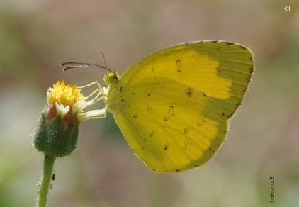

COMMON EMIGRANT
Catopsilia pomona

Habits
Powerful flight with erratic ups and downs and jerks. Basks with its wings closed. Mud-puddles in great numbers
Description
Wing colour varies from greenish white to different shades of yellow. Resembles Mottled Emigrant but without markings on the underside
COMMON GRASS YELLOW
Eurema hecabe
Habits
Weak flier and flutters close to the ground. Prefer open grass and scrub habitats. Active during mornings and noon. Mud-puddles regularly
Description
Bright yellow with a narrow black border on the fore wing of the upperside. Underside has brown blotches
COMMON GULL
Cepora nerissa
Habits
Rapid flier, often close to the ground, usually among bushes and grass. It occasionally basks in the sun
Description
Upperside is white and underside is yellow, wing margin and veins are black
COMMON JEZEBEL
Delias eucharis
Habits
Flight is weak, slow and fluttering. Frequently visits flowers. Covers long distances. Basks on trees with wings closed
Description
Upperside is white with black veins. Underside of the hind wing is yellow with black veins marginated with a series of red spots. Females are more heavily marked
INDIAN PIONEER
Belenois aurota
Habits
Flutters and flies rapidly. Partial to damp patches
Description
White upperside with black apical border and ‘hockey-stick’ marking on the fore wing. Underside of hind wings is yellow with black veins. During dry season the underside of hind wing is paler than yellow. Females are larger
MOTTLED EMIGRANT
Catopsilia pyranthe
Habits
Powerful, irregular flight. Usually close to the ground; rarely rests and mud-puddles; migratory. Basks and rests with wings closed
Description
Upperside is dull or greenish white with a black apical border. Underside is darker and greenish-ochreous hue with dainty grey or brown striations and has spots
WHITE ORANGE TIP
Ixias marianne

Habits
Flies rapidly and erratically with continuous wing beats, close to the ground. Active, fond of sunlight and flowers. Mud-puddles
Description
Upperside is white with a black border, the fore wing having an apical orange patch. Underside is bright yellow with brown spots. Females have black spots within the orange patch